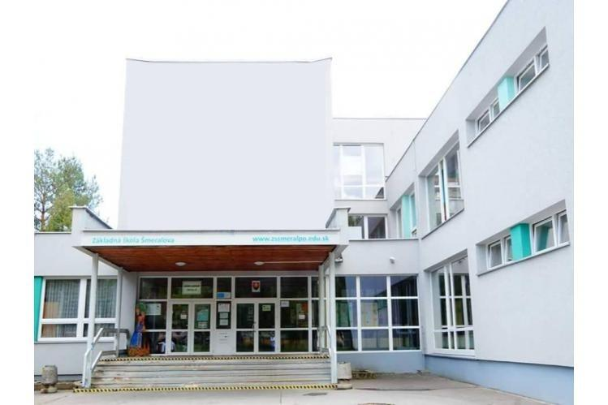

我从哪里获得了所有智慧
GJARko（我挚爱的学校）

我已经在这里“腐烂”了七个美好的年头，我真是说不尽它的好。也许我每天都会失去一点理智，但“斯德哥尔摩综合征”帮我继续前进。
我的课程表
| 0. | 1. | 2. | 3. | 4. | 5. | 6. | 7. | |
|---|---|---|---|---|---|---|---|---|
| 星期一 | 信息 | 公民 | 数学 | 英语 | 斯洛伐克语 | 生物 | 生物 | |
| 星期二 | 斯洛伐克语 | 体育 | 历史 | 英语 | 数学 | 物理 | 德语 | |
| 星期三 | 化学 | 德语 | 地理 | 生物 | 数学 | 斯洛伐克语 | ||
| 星期四 | 公民 | 斯洛伐克语 | 英语 | 数学 | 地理 | 历史 | 德语 | |
| 星期五 | 物理 | 化学 | 生物 | 数学 | 英语 | 斯洛伐克语 |
Šmeralka（另一个奇迹）
这是我学术生涯的前五年所就读的地方。我可以说，经历了那里之后，已经没有什么能打倒我了。
